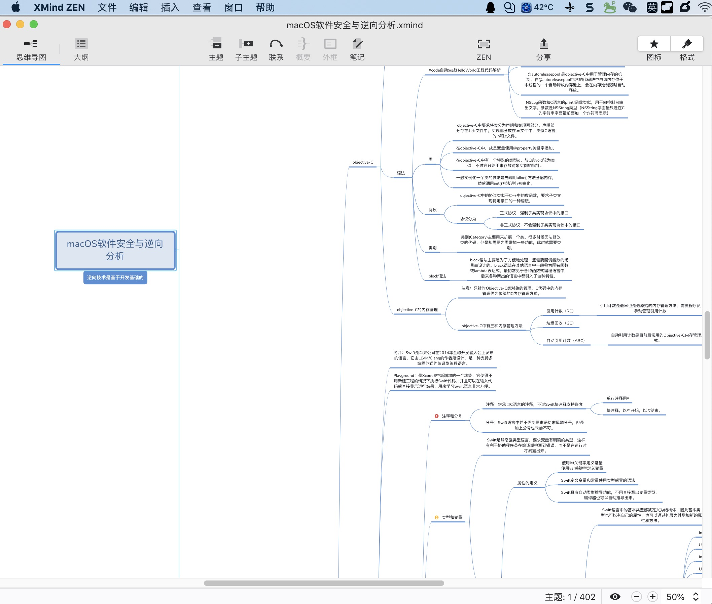
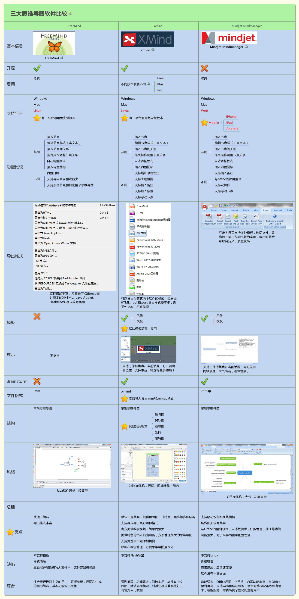
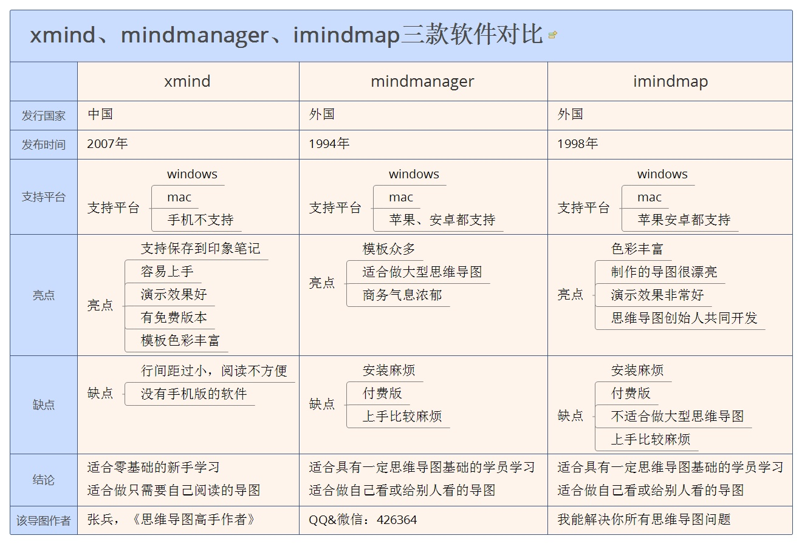
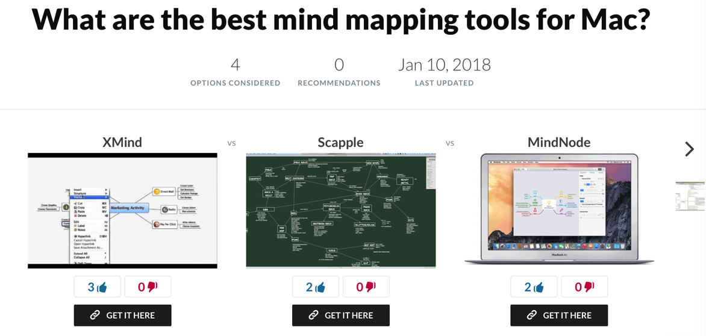

脑图mindmap
脑图=mindmap=mind map- 别称：
思维导图 - 是什么：常见图形的一种，常用于总结某类内容
- 往往是公司多人开会头脑风暴讨论某个东西后，用脑图呈现出来，成系统的一套东西
- 长什么样：从中间某个主题，散发出去，呈现多个分支状
- Xmind
- 
- processon
- Xmind
- 别称：
常见脑图工具
- 客户端软件
- 跨平台
Xmind：很好用MindJet的MindManagerFreemind：虽然免费，但是真心不好用iMindMap：3D，炫酷，好看MindMasterOmnigraffle：古老的感觉
- Mac
MindNoteScappleMindNode：Mac端，简洁好用- 主页
- Mind Map & Brainstorm Ideas - MindNode
- 主页
- 跨平台
- 在线网站
- 推荐：processon
- 百度脑图：很一般
对比
XMind、MindManager、iMindMap
MindManager是Win平台最强大的，Xmind次之，iMindMap次次之；- MindManager非常强大但是主要维护Windows版！
- XMind是macOS平台最好用的，iMindMap次之，MindManager在十万八千里之外；
- XMind是macOS和Win同步更新 在macOS下是最棒的，在Win下稳定性受人诟病
Freemind vs Xmind vs MindJet MindManager

Xmind vs MindManager vs iMindMap

XMind vs Scapple vs MindNote

其他评价
- 最强大思维导图工具三剑客除了
MindManager和XMind，第三个就是iMindMap只是漂亮，其他方面次于xmind或者mindmanager，因为作图漂亮如果做展示用和存档的话这个还是不错的。 iThoughtx和MindNode是macOS与iOS平台轻量级里面最好的思维导图工具，（我个人更喜欢MindNode）- 不过这两个工具较话题讨论的两个工具是超级轻量化的，尤其MindNode简单至极，但是大道至简，简单正好带来了零门槛入门，并且可以心无旁念专注于思考。
- 推荐刚入门就从MindNode学起，等完全掌握了思维导图的精髓后再按照上文选择自己的工具
结论
macOS：Xmind完胜Win：MindManager完胜macOS＋Win双平台通用：XMind完胜